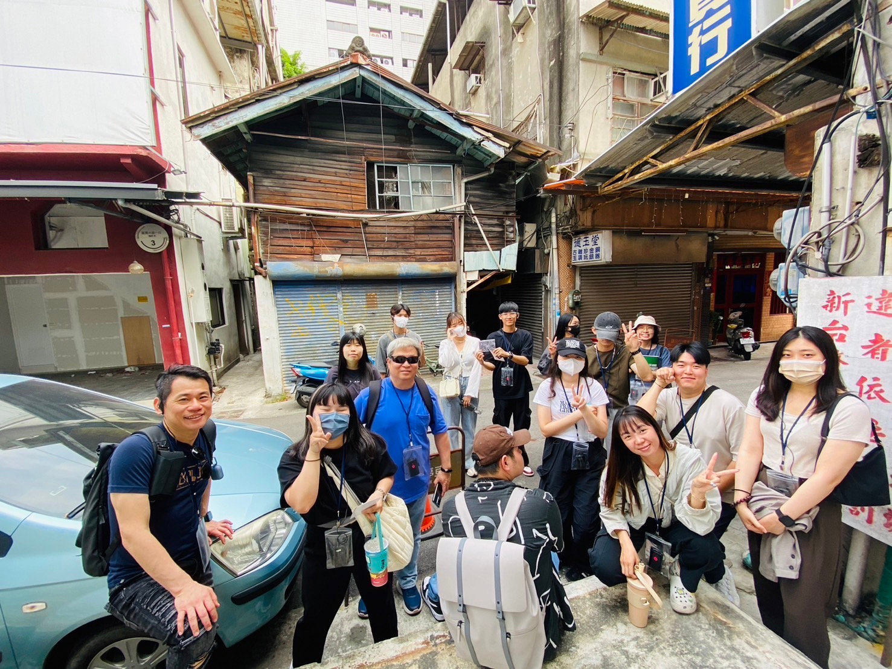
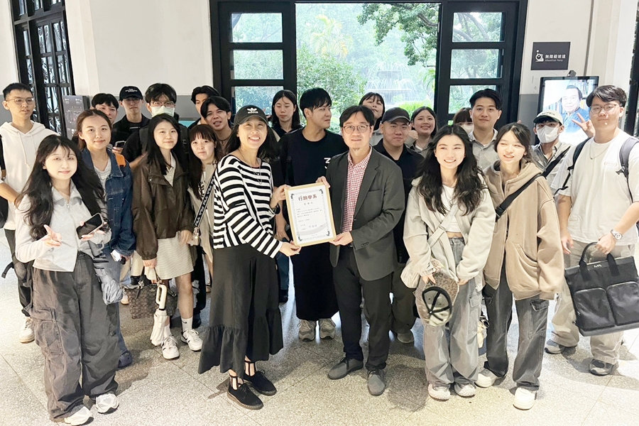

GLOBAL MARKETING
全球行銷
理解不同市場的消費文化與需求，思考品牌的跨國發展與在地回應。
CURRICULUM & EXPERIENCE
融合科技、美學與實務，從真實問題出發，建立面向全球的行銷能力。

OUR APPROACH
課程借鏡包浩斯的跨域精神，將美感、科技和產業問題帶進同一個學習場域。透過案例討論、業師交流及專題實作，連結行銷理論與企業需求。
畢業總學分
必修
選修
學分資料依原網站；論文及其他畢業條件請依入學年度修業規定確認。
FOUR CAPABILITIES
GLOBAL MARKETING
理解不同市場的消費文化與需求，思考品牌的跨國發展與在地回應。
BRAND AESTHETICS
從設計、文化與情感出發，探索品牌識別與體驗的形成。
BUSINESS DECISIONS
將市場觀察轉化為策略，練習以企業經營的視角分析商業模式。
AI EMPOWERMENT
結合資料分析與 AI 工具，培養以證據支持行銷判斷的能力。
LEARN BY DOING

從企業參訪與業師分享，觀察國際品牌如何溝通與創造價值。

行銷資料科學與洞察課程，從台中城中城的現場觀察展開探索。

全球文創與產業經營課程，連結文化場域與產業思考。
資料來源：原站課程特色 · 資料核對：2026.11.26
YOUR NEXT CHAPTER
把對品牌的好奇，轉化為面向全球的行銷能力。
探索入學方式